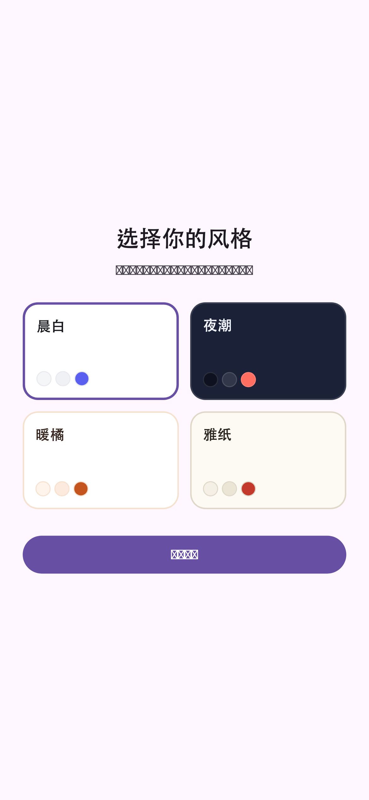
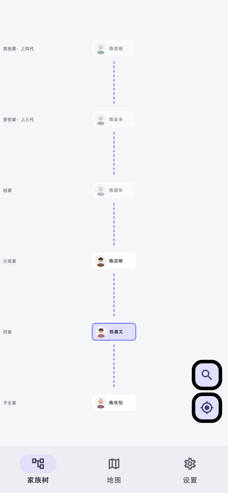
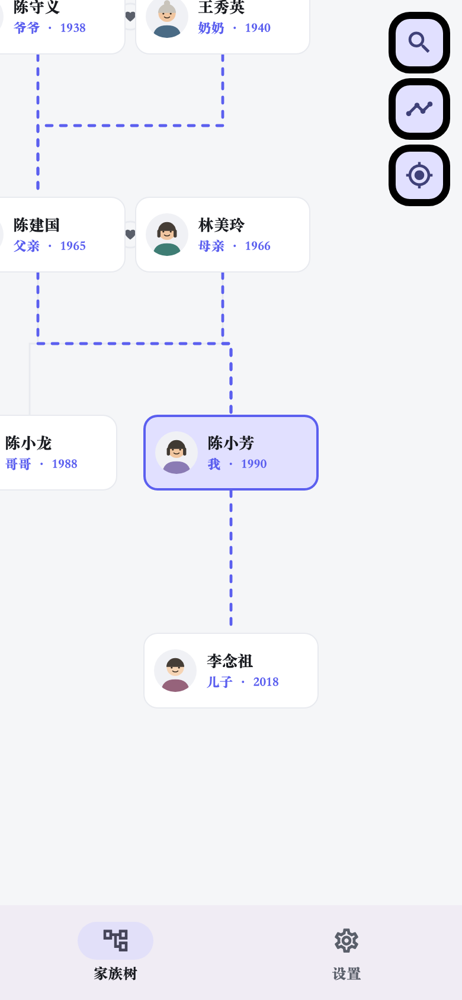
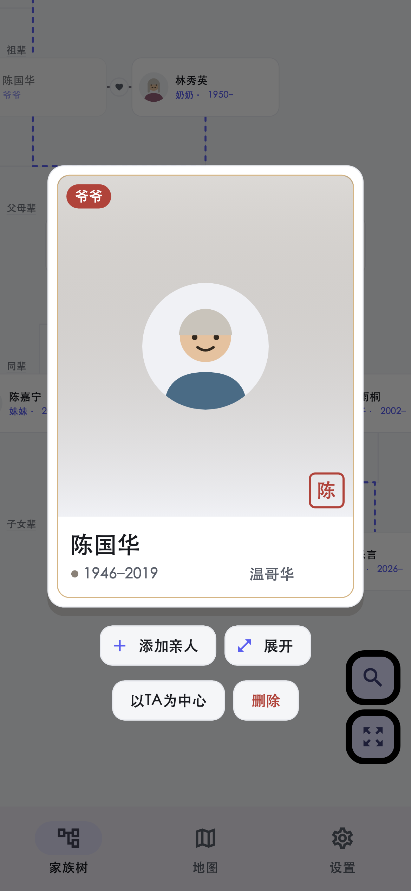
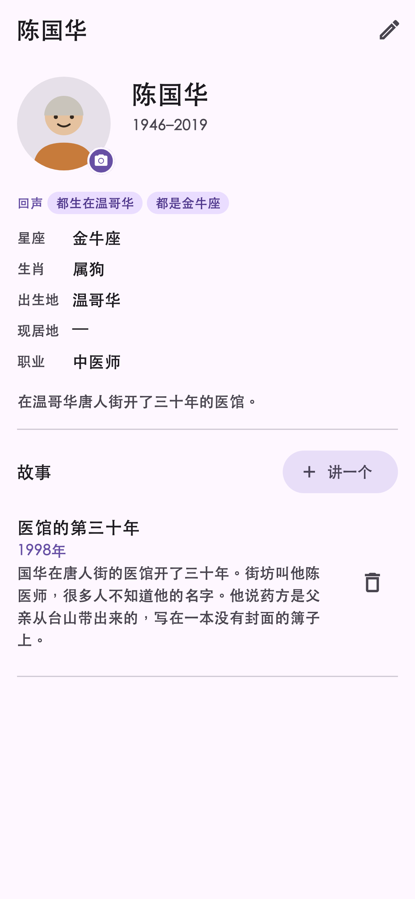
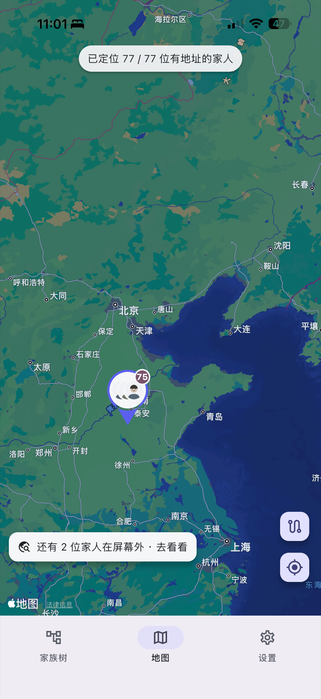
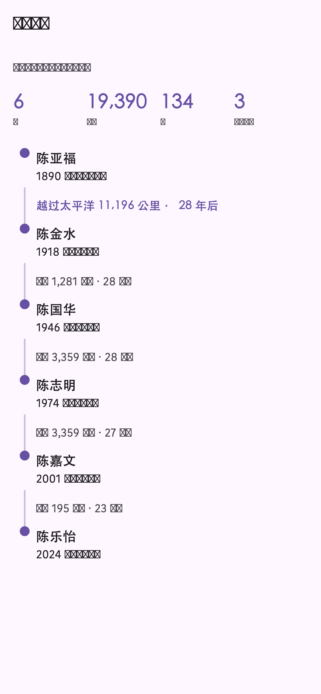

会呼吸的家族树
缩放漫游整棵树：血脉沿着线路流动，夫妻之间系着连理红心，逝去的亲人温柔地淡去。
从你自己开始，一人一卡，几分钟就能种下一棵家族树。
缩放漫游整棵树：血脉沿着线路流动，夫妻之间系着连理红心，逝去的亲人温柔地淡去。
姑妈、表哥、外甥女……点开任何人，App 立刻告诉你该怎么称呼，支持中西方六种语言的称谓体系。
每张卡片背后是一座小小的纪念馆：照片、录音、视频、文字故事，把亲人的音容留给后代。
和爷爷同属虎、和外婆同一个星座——App 自动发现跨越世代的巧合，这就是家族的「回声」。
本地优先：不需要注册账号，家族数据保存在你自己的手机里，不上传、不追踪。
把亲人的出生地标在地图上，沿着直系一脉看过去——从祖辈的村庄到你现在的城市，几代人的脚步，连成这一条路。
内置六棵真实的家族树：孔子七十九代、伊丽莎白二世、肯尼迪、达尔文、梁启超，还有炎黄二帝。打开就知道一棵长成的树是什么样子。
GEDCOM 双向互通，和你已经在用的家谱软件对得上；一份 .zuying 文件就是整棵树，隔空投送给家人，他打开就是完整的一棵。
晨白、夜潮、暖橘、雅纸四套主题随心换；界面支持简体、繁體、English、Español、Français、हिन्दी。
以下截图来自正在开发中的 iPhone 版本。







这是真实界面的迷你版：拖动、缩放画布，点人看卡片和称谓；点「展开」逛逛 TA 的个人主页；右上角换风格。
这里只是浅浅一瞥——想亲手添加家人、写故事、录声音？都在 App 里。
祖影正在为 App Store 上架做最后准备，Android 版随后跟上。
想法、建议、想第一时间试用？写封邮件给我们。
✉️ zuyingapp@gmail.com我们会认真读每一封来信。